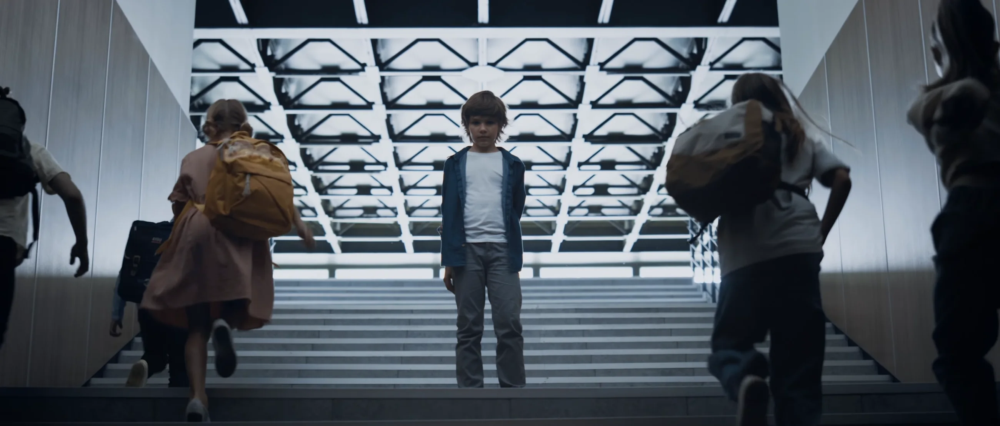

“Trust is such an amazing team. It's so rare to find such a high caliber of creativity, strategy, and technical skill in a small studio like this. They deliver work comparable to top agencies, but with so much heart and warmth. I have loved working with them.”Jen Hood, Founder and CD at Hoodzpah
Marketing, web branding, writing,
and all things design.
M&S Consulting
Building a marketing engine that makes a consultancy more human, discoverable, and connected.
Collegiate Church Network
Building the communications engine behind email, podcast, annual-report, video, and donor-development work.

The Forgotten Initiative
Leading communications across podcasting, video, campaign strategy, fundraising, and audience activation for a complex mission.
“The team at Trust have earned every bit of their agency's name. Hometeam trusts them to bring our brand to life. They treat our brand like their own. We are so incredibly lucky to have them as partners.”Brandon Bloch, Founding Partner at Hometeam
“We have gotten so many new clients/potential clients in the last few months that we are having a hard time even keeping up! We have y'all to thank for playing a huge part in this!”Caroline Robinson, Southtown Design + Build
Strategy
- Research
- Market Analysis
- Positioning
- Brand Values
- Naming
Brand
- Logo
- Visual Identity
- Brand Voice
- Messaging & Taglines
- Brand Applications
Web
- Web Strategy
- Design & Development
- Webflow Expertise
- Custom Scripting
- Advanced Animation
Extras
- Illustration
- Animation
- Copywriting
- Brand Campaigns
- Production Design
(Continued)
- Merch Packages
- Email Design
- Event Branding
- Speaking & Workshops
- Brand Consultation
My primary capability, which encompasses all the rest, is connecting deeply with your team, your vision, and your needs. I take the time to understand what you do and why you do it, so my work feels like it came from an in-house team instead of an outside designer.